Look Alive
Plague Inc in reverse. You are a robot swarm pretending to be native microbes on an alien planet, and you win by passing as native.
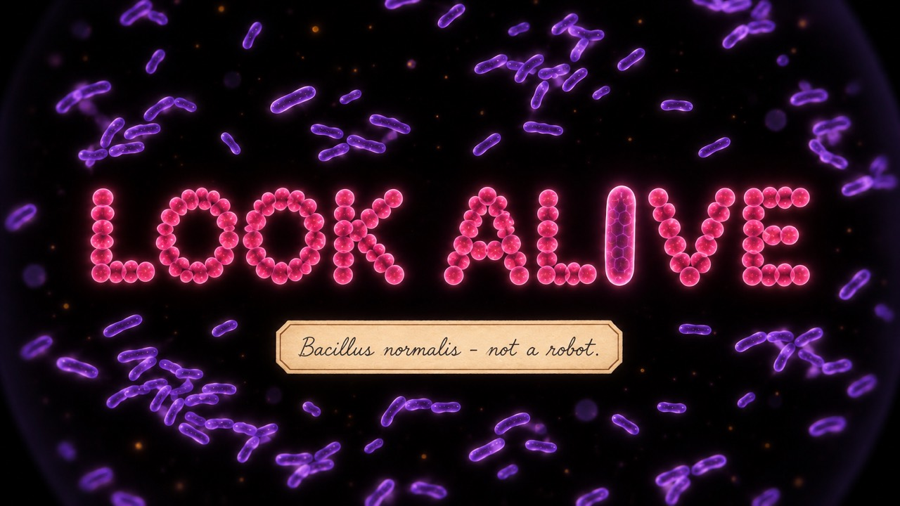
Decisions for you
- Approve the MVP scope below, or change it.
- Is Acidica (your waste gives you away) the right first planet?
- Are the six pass criteria the right bar for go or no-go?
- Which reference images are on target, and which are off? Use the plate numbers.
- Should build step 1, retuning the simulation, start now?
- Who catches you: the native cells, the lab's researcher, or both? The plan assumes both.
- Is the Biology and Machine split right, with rule cards priced in suspicion?
Nothing is built except the two spikes. Everything is on the local proto/all branch, and nothing has been pushed.
The game
You win a dish when your colony survives the run, stays inside the dish's population band for most of it, and never gets exposed.
You get exposed when your colony looks unlike the natives for too long. The robot's own special risk is being too perfect.
Tone: deadpan comedy. A handler back home sends confident, slightly wrong advice. Your cover name is Bacillus normalis.
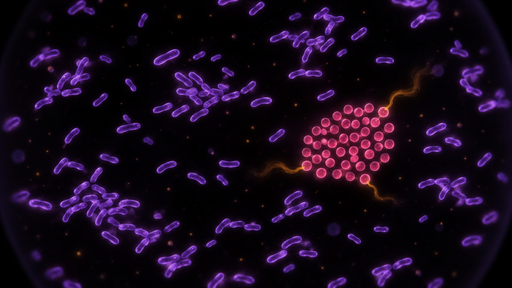

New: the mission and two kinds of parts
Added after your feedback, 16 Nov
The mission: infiltrate the labs
Each planet has a research lab that studies its own life. You are a sample in their dishes. Your goal is to get deeper into the lab and read what they have learned.
- The dish is the lab's dish, and the view is the lab's microscope. The dark-field picture is what their researcher sees.
- Progress is depth into the lab: bench dish, incubator, cold room, culture collection, and finally the lab notebook.
- The reward for each dish is a stolen notebook page. Each page teaches one real idea from cell biology, then says how this planet differs.
- Two things can catch you. The native cells react inside the dish. The researcher reacts from above: a closer look, then a stain test, then the dish is sterilised.
Two kinds of parts: Biology and Machine
| Shelf | What it is | Examples | Cost |
|---|---|---|---|
| Biology copied from life | Real cell parts that behave as they do in real cells | Membrane, cell wall, flagellum, pili, ribosomes, fermentation or respiration, chemical quorum signal, spores | Slow, leaky, imperfect. Safe from suspicion. |
| Machine only a machine can do it | Abilities no cell has | Perfect clock, radio between cells, exact counting, memory, self-repair, perfect copying, reflex rule cards | Powerful. Each one raises the regularity channel. |
- Every Machine part has a Biology counterpart that does the same job worse. Radio is instant. A chemical quorum signal is slow and fades with distance.
- You learn real biology as the honest, slower way to solve a problem, and why life does it that way.
- Rule cards are Machine parts. Their price is suspicion in the regularity channel. This fixes the "free rule card" problem from the spike in a way that fits the story.
- Each part's card has two lines: what the real thing does, and what the game changed.
What the MVP teaches
| Dish | Stolen notebook page |
|---|---|
| 0 | Binary fission and the growth curve: lag, log, plateau |
| 1 | Carrying capacity and competition for food |
| 2 | Metabolism: cells must eat, and waste is a signature |
| 3 | Variation: no two cells divide at the same moment |
| 4 | Sensing and response: how cells react to change |
| 5 | Fermentation and respiration, and Acidica's sour version |
What the spikes proved
Two throwaway builds ran before this plan. One tested the rules with bots and no graphics. The other tested rendering and speed.
Rules spike
| Property | Result | Numbers |
|---|---|---|
| Doing nothing loses | Pass | Starves in every dish |
| Maximum growth loses | Pass | Exposed at tick 13 |
| Two or more different builds win | Pass | 11, 8 and 25 mutually different winners |
| A one-step change is smooth | Fail | Share moves about 5 points, which is fine. The immune stage can jump two levels. |
| Dish 3 needs a reflex rule | Pass | 0 of 1,848 attribute-only builds win |
| Blind slider sweeping fails | Pass | Random builds win 6.2%, 2.5%, 0.0% |
| Deterministic and resumable | Pass | Byte-identical repeats |
| Each loss has one nameable cause | Pass | 94% of losing runs |
| Speed | Pass | 23 ms at 64×64; about 400 ms at 256×256 |
Render spike
| Measure | Result |
|---|---|
| World step, 256×256 grid | 1.6 ms per tick |
| Instant resolve of 300 ticks, in the browser | 0.5 to 0.7 s |
| Snapshot at 256×256 | 0.1 ms, 1.75 MB each |
| Drawing 200,000 microbes (Apple M5) | 4.4 ms GPU, 4.6 ms buffer rebuild |
| Worker needed at 256×256 | No |
Slower machines, phones, Safari and Firefox are unmeasured.
What changed because of the spikes
- Coexistence is a rule. Natives crowd themselves harder than they crowd you. Without that, your share runs to 0% or 100% and the band cannot be held.
- Finer levers. Sliders go from 0 to 8, and one step may move suspicion by less than half an immune stage.
- Decoupled channels. Waste suspicion depends on chemistry mismatch, not colony size.
- The immune response weakens, then removes. It shows its kill rate and is not an instant delete.
- Every rule action needs an event that makes it matter. In the spike only "divide faster" ever won.
- Rule cards cost budget points. An always-on card is otherwise a free attribute point.
- Toughness gets a job: it is what survives the planet's events.
Core design
Suspicion: four channels, one gauge
| Channel | You raise it by | The fix | Stain and pattern |
|---|---|---|---|
| Growth | Dividing faster or slower than natives | Match their rate | Pink, stripes |
| Waste | Leaving the wrong chemistry | Match the local waste, at a cost | Amber, dots |
| Casualties | Starving or harming natives | Share food, stay in band | Violet, crosshatch |
| Regularity | Being too perfect: same timing, flat graphs, stock settings | Authentic Sloppiness | Green, zigzag |
- Suspicion has memory and decay. A corrected spike is forgiven. A long drift is not.
- The channels roll up into one COVER gauge, with a safe zone in the middle and "Too Alien" and "Too Perfect" at the ends.
- Three immune stages give two warnings: Curiosity, Inspection, Response.
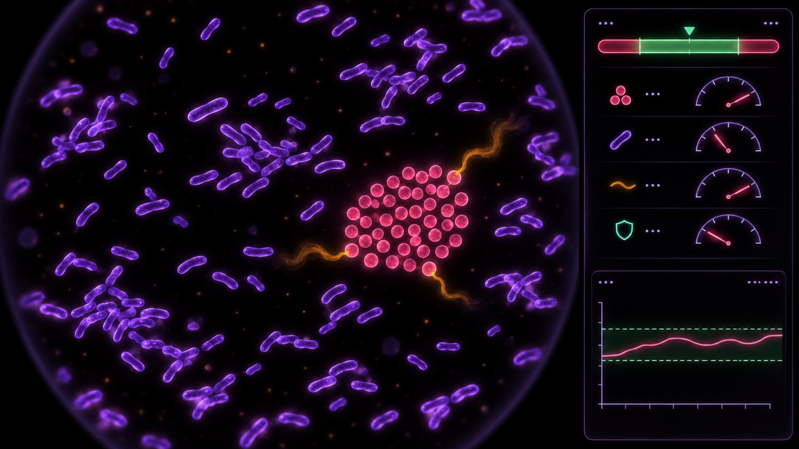
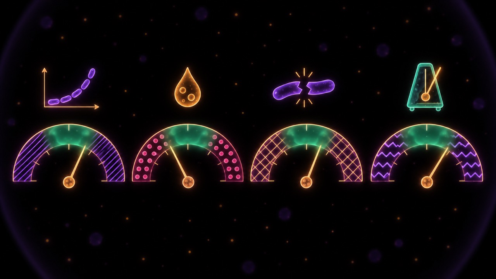
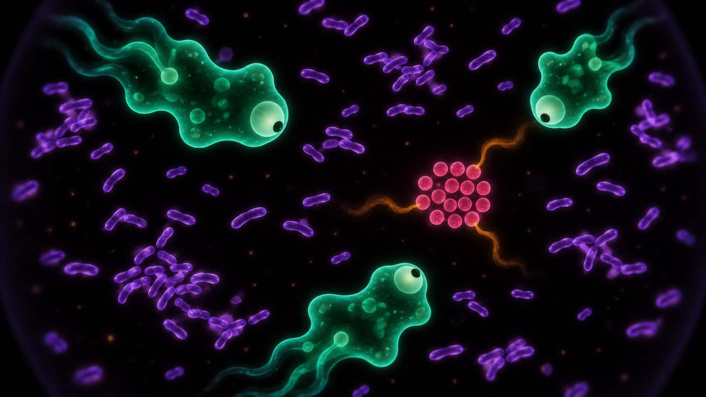
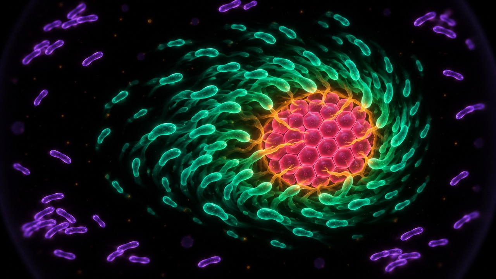
The robot tell
The regularity channel is the game's own idea, so it gets the strongest feedback.
- Hexagon seams on your cells show the regularity channel directly: smooth, wobbly, caught.
- The metronome: when regularity spikes, a tick fades in and your cells pulse in unison.
- Factory Defaults: an unchanged build is itself a tell.
- Anti-flatline: a graph that is too flat raises regularity. This closes the "sweep sliders until the line is flat" exploit.
- Authentic Sloppiness is the dial that fixes it, with tick labels from "Spreadsheet" to "Teenager". Sloppiness costs efficiency.
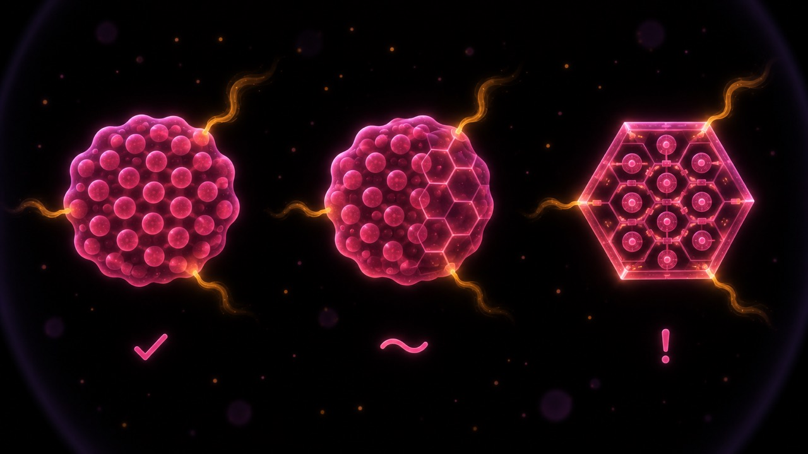
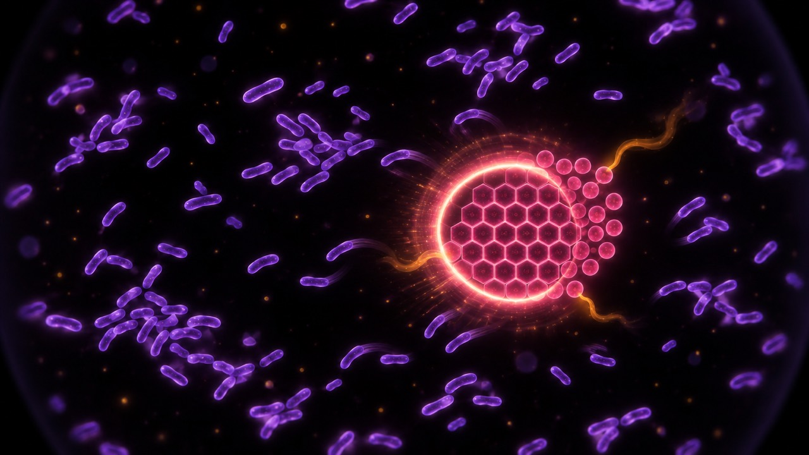

What you control
| Input | MVP | Full game |
|---|---|---|
| Attribute pairs (0 to 8) | Divide vs Toughness; Efficiency vs Sloppiness | Same, plus Motility vs Stealth |
| Waste chemistry | Match or not, at a cost | Several chemistries |
| Skills | None | Biofilm, quorum signal, enzymes, mimicry |
| Reflex rule cards | 1 slot, arrives in dish 4 | Up to 3 slots |
Rule cards are tap-to-fill sentences: When [sensor] is [more or less than] [value], then [action]. Empty slots offer three starter cards from the handler. Cards flash when they fire and are marked if they never fire. Each card costs budget points.
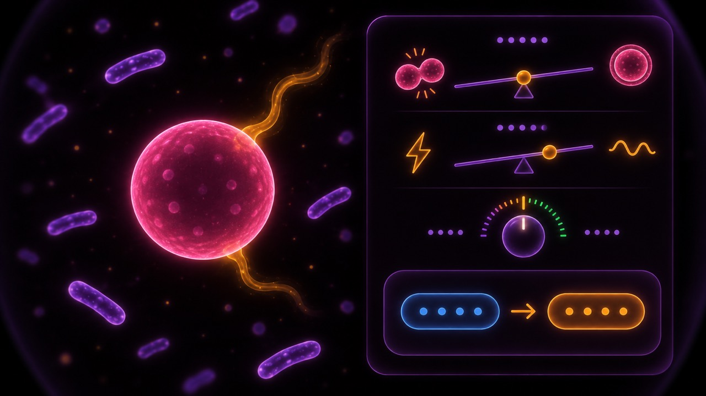

The loop
- ScoutWatch the natives alone. Read their growth curve, waste and variance.
- BuildSet attributes and cards. Undo and three build snapshots are available.
- RunThe dish resolves instantly.
- ReplayScrub, change speed, or press Skip to trouble. Your previous attempt stays on the graph as a ghost line.
- Autopsy or stampA loss drops a pin on the timeline and names the cause. A win gets a rubber stamp.
- RetryOne tap, build kept.


Teaching
The first dishes teach by imitation, with almost no text. Each dish is named for what you must do.
| Dish | Title | Teaches | How |
|---|---|---|---|
| 0 | Match the Ghost | The goal is a range, not a maximum | Natives trace a growth curve. You drag one slider until your curve sits beside theirs. Cannot fail. |
| 1 | Stay Small, Eat Quietly | The band and the COVER gauge | Growing fast overshoots, starves and crashes. The replay shows why. |
| 2 | Don't Just Sit There | Doing nothing loses | A "Just sit there" button shows the colony starving and flagged as Factory Defaults. |
| 3 | Be Messy | Regularity and sloppiness | Two native colonies with the same average and different spread. Your perfect colony gets the metronome. |
| 4 | When Things Change | The first reflex rule | A scheduled bust that no fixed build survives. |
| 5 | Greetings from Acidica | Everything together | The finale. |
- Goal postcard: a three-icon strip, always on screen: band, low suspicion, clock.
- Cause ribbon: a thin strip under the graph, coloured by whichever channel is contributing most.
- Handler's wrong advice: each briefing has one confident tip that is subtly wrong. The autopsy corrects it with real numbers.
- Scale bar and doubling clock, so the science is visible without a lecture.
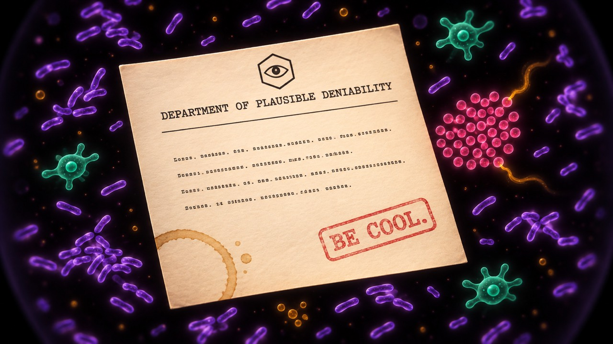
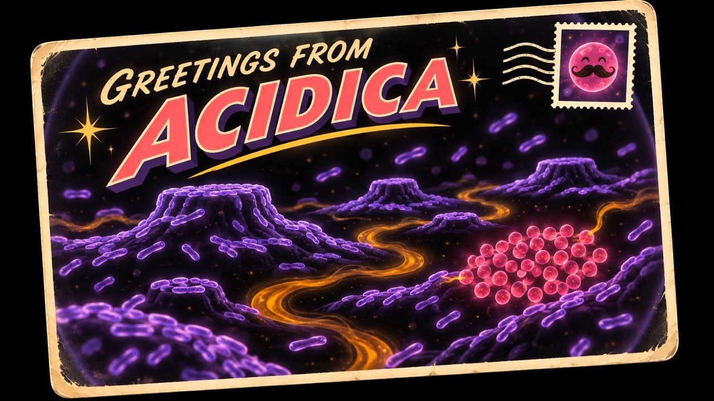
Minimum viable product
In
- One planet, Acidica. One native species. Bacteria only.
- Six dishes, as in the table above.
- Two attribute pairs, a waste setting, one rule slot.
- COVER gauge, four patterned channel needles, normal-band overlay, three immune stages.
- Autopsy with a pin, jump to the moment, and a coroner's-memo headline.
- Ghost-run overlay, one-tap retry, Skip to trouble, undo and build snapshots.
- Stamps and generated cover names on a win.
- Seam reveal, lens mood, focus-pull transitions.
- Calm Lens mode, which stops pulsing, shake and flicker.
- Synth audio: suspicion drone, metronome, stage chimes.
Out
- Skills, extra planets, more than one rule slot, daily dish, build codes, photo mode.
The MVP passes if
- A first-time player understands the goal in under 10 minutes.
- After a loss they can name the cause within one replay scrub.
- They can mostly predict a run's result before pressing Run.
- At least two different builds solve each dish, and doing nothing loses. Bots check this.
- A one-step change never jumps the immune stage by more than one. Bots check this.
- The run and replay feel like a reveal, and the autopsy gets a smile.
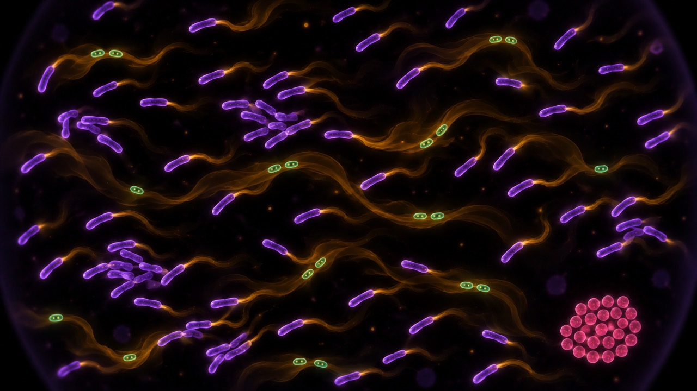
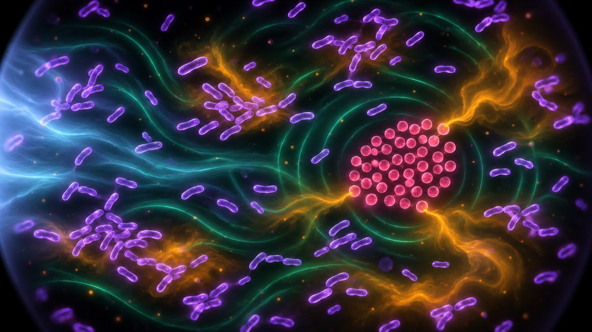
Full game
Five planets, about eight dishes each. Every planet inverts one rule and opens with a complaint letter from the last robot who failed there.
| Planet | Inverted rule | New tool |
|---|---|---|
| Acidica | Your waste is your identity | Waste matching |
| Quietus | Silence is suspicious | Quorum signal |
| Brightside | Light is poison | Motility and "retreat" rules |
| Tidewash | Standing still is suspicious | Movement rules, toughness |
| Mycelia Prime | Hoarding is a crime | Sharing and networks |
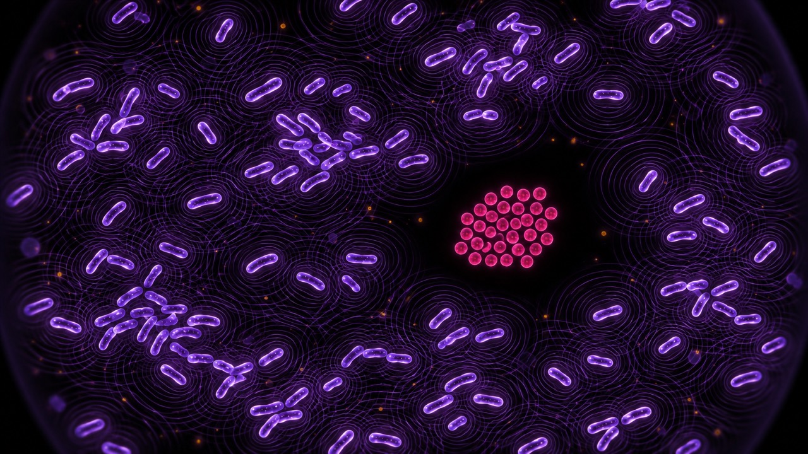
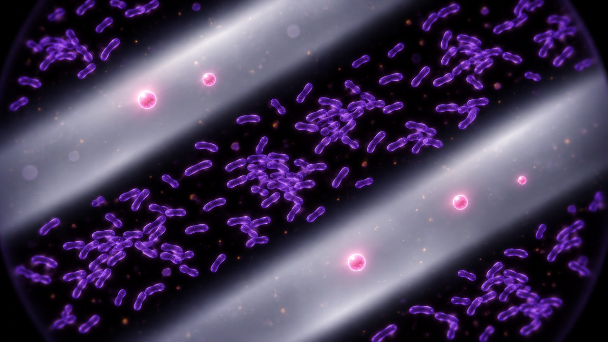
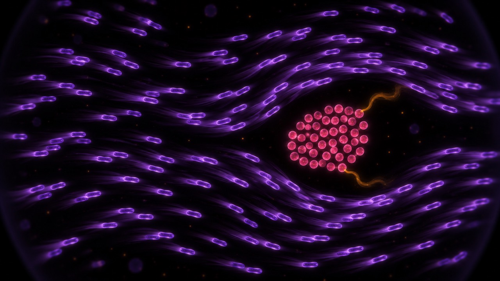
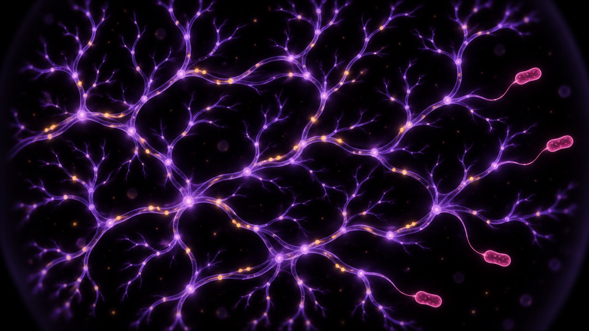

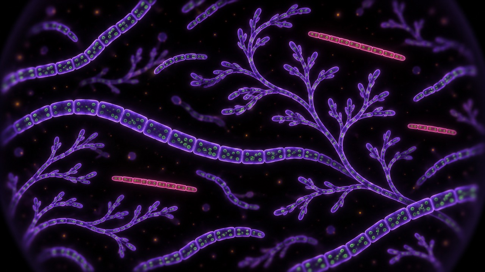
Dish types beyond "hold the band"
- Surprise events: one authored event per dish, such as a phage burst or a nutrient crash.
- Sabotage dishes: you get a failing build, one autopsy line and two edits.
- Chemostat dishes: food flows in and cells flow out, so growth must match the dilution rate.
- Mutators and par score: optional constraints and a fewest-points target, for experts.
More tools for understanding
- Immune Eyes: hold a key to see the dish as the immune system does.
- Predict first: sketch the curve you expect, then compare.
- Lab Notes: each mechanic gets two lines: what the science says, and what the game changed.
Later, or never
- Later: fungi and plant tiers, daily dish, build codes, photo mode.
- Out of scope: ants and bees, any server feature, multiplayer.
Art direction
Each stain colour has one meaning everywhere, including the logo and the store page. Each channel also has a pattern, so colour is never the only cue.
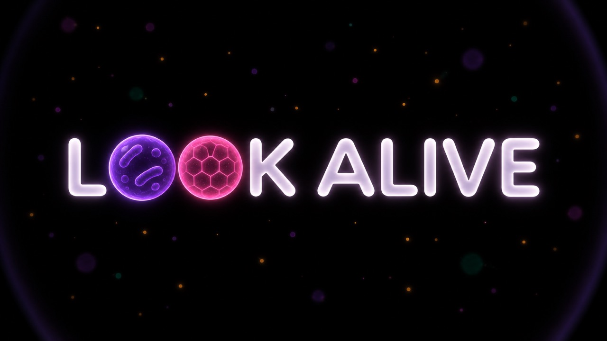
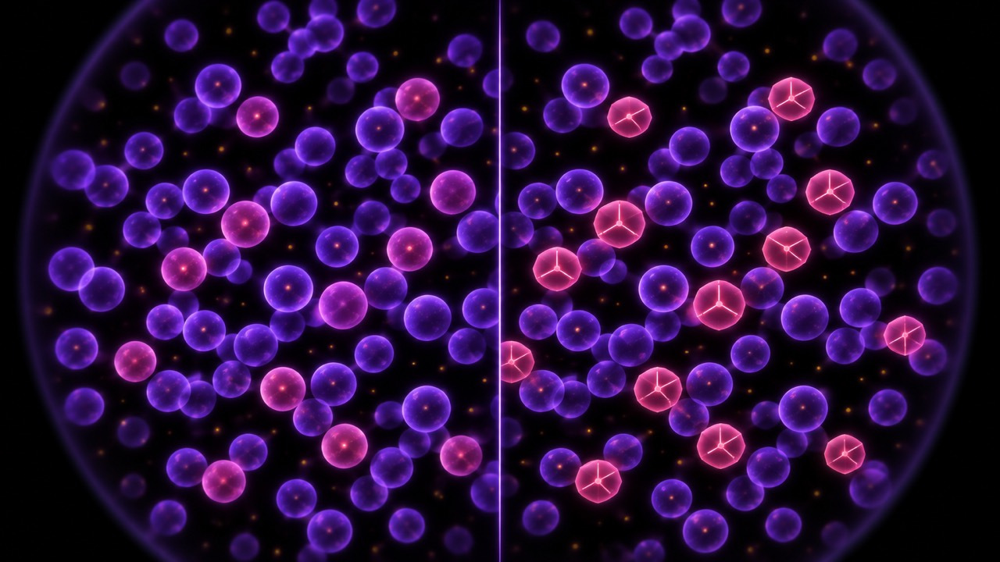

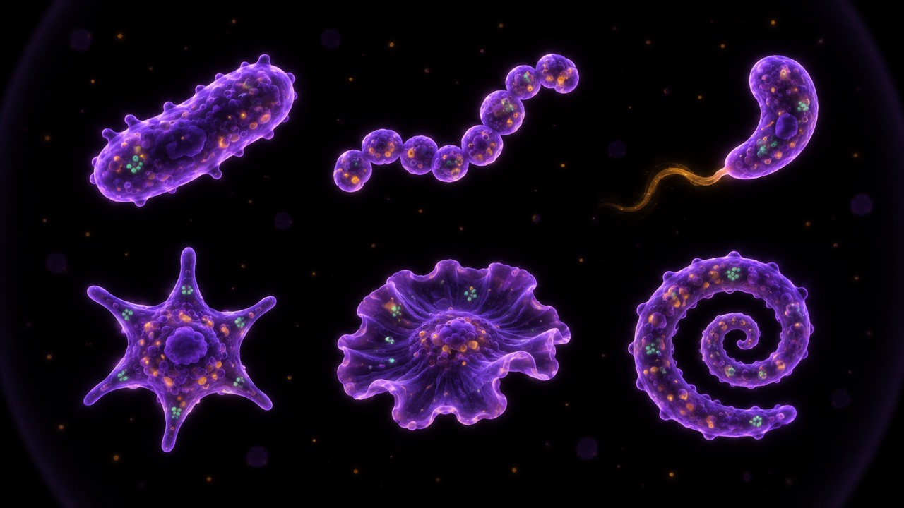

In-game cells are drawn in shaders. The generated images are references and marketing art, not sprites. Paper items such as the letterhead, stamps and postcards can be generated once and reused.
All 30 images cost $1.18. Prompts are in art-requests.json, and plate numbers match the file names in refs/.
Build order
| Step | What | Proves |
|---|---|---|
| 1 | Retune the simulation: finer sliders, decoupled channels, gradual immune kill, card prices, one event type | The smoothness property passes |
| 2 | Dishes 0 to 2 with the COVER gauge, replay and autopsy, on flat placeholder graphics | The goal is understandable |
| 3 | Dark-field renderer joined to the real simulation | It looks like the references |
| 4 | Regularity: seams, metronome, sloppiness dial, dish 3 | The robot tell is fun |
| 5 | Rule card, dish 4, finale | Rules are approachable |
| 6 | Voice, stamps, handler, sound | It is funny |
| 7 | Playtest against the pass criteria | Go or no-go for the full game |
Step 1 comes first because it fixes the only failing property.
Technical plan
- World: a 256×256 grid of typed arrays, deterministic, fixed step.
- Resolve: a full run in under one second, with per-channel history and a snapshot every 10 ticks.
- Rendering: WebGL2. Density texture zoomed out, instanced microbes zoomed in, bloom and vignette.
- Defaults: 20,000 visible microbes, up to 50,000 on fast machines, 5,000 on phones, with automatic fallback.
- Runs from a local file. No modules, no server, no build step.
Ideas from the brainstorm
Six agents produced 112 ideas across six lenses: easier to understand, easier to play, more fun, funnier, more educational, and better to look at and market. Thirty were kept.
Kept for the MVP (22)
| # | Idea | Why |
|---|---|---|
| 1 | COVER gauge with two red ends | Makes the inverted goal visible |
| 2 | Goal postcard strip | Restates the goal every dish |
| 3 | Growth-curve tutorial with ghost natives | Teaches by imitation |
| 4 | Overshoot-and-crash lesson dish | Teaches the band by failure |
| 5 | "Just sit there" beat and Factory Defaults tell | Kills the do-nothing strategy |
| 6 | Hexagon seams as the regularity meter | The art is the instrument |
| 7 | Metronome tell | Funny and readable |
| 8 | Authentic Sloppiness dial | One control for the robot tell |
| 9 | Variance-is-biology scouting beat | Explains why sloppiness matters |
| 10 | Autopsy as a pin, with jump-to-moment and coroner's memo | Names the cause of failure |
| 11 | Cause ribbon under the graph | Shows which channel is to blame |
| 12 | Ghost-run overlay and one-tap retry | Shows what a tweak did |
| 13 | Skip to trouble and replay speeds | Less watching |
| 14 | Tap-to-fill rule sentences and starter cards | Makes rules approachable |
| 15 | Pattern-coded channels and Calm Lens mode | Accessibility |
| 16 | Undo and build snapshots | Safe experimenting |
| 17 | Stain palette as a rule | Consistent visual language |
| 18 | Seam reveal | Signature moment |
| 19 | Lens mood and focus-pull transitions | Cheap atmosphere |
| 20 | Stamps and generated cover names | Reward and comedy |
| 21 | Handler's wrong-advice ledger | Comedy that teaches |
| 22 | Dish titles as verb phrases | The title is the hint |
Kept for the full game (8)
| # | Idea | Why |
|---|---|---|
| 23 | Surprise native events | Makes each rule action matter |
| 24 | Sabotage dishes | Variety from existing systems |
| 25 | Planet rule banner as a complaint letter | Makes each inversion clear |
| 26 | Immune Eyes view | Shows suspicion as someone else's perception |
| 27 | Predict before replay | Rewards understanding |
| 28 | Chemostat dishes and quorum thresholds | Real science, new puzzle shapes |
| 29 | Lab Notes: where the game lies | Honest about the science |
| 30 | Mutators and par score | Depth for experts |
Left out, and why
| Idea | Reason |
|---|---|
| Live intervention pings; inspector minigame | Break the plan-then-watch loop and the deterministic checks |
| One-tap "what if" fixes; counterfactual ghost run | Solve the puzzle for the player and need a solver |
| Slider preview needles | A cheap estimate that is wrong would damage trust |
| Rival robot colony; reverse dish | Large, and not needed to prove the game |
| Gene transfer, antibiotic and succession chapters | Scope |
| Native gossip ticker, pet names, hobby forms | Writing volume for little gain |
| Clip export, phone thumb layout, text-to-speech | Later, if the game ships |
Risks
- Smoothness is still unproven. The fix is designed but not tested. It is build step 1.
- Legibility. The autopsy named a cause for 94% of bot losses. Human players are untested.
- Restraint as fun. "Nothing bad happened" needs the stamp, the voice and the reveal to feel like a win.
- Slow machines. Only one fast machine was measured.
- Title. "Look Alive" is shared with a small itch horror game and an unreleased zombie game.